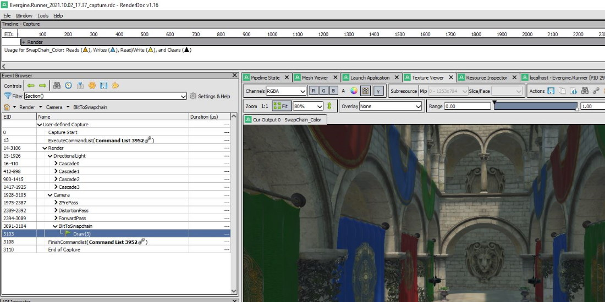
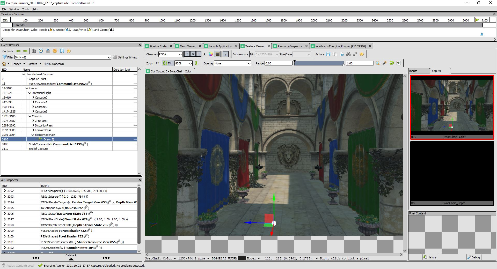

Profile with RenderDoc

RenderDoc is a graphics debugger currently available for Vulkan, DirectX 11/12 and OpenGL development on Windows, Linux and Android. It is integrated on Evergine Studio to make it easy to debug your application during the development process.
To install the latest RenderDoc version visit the project website
Loading RenderDoc
First you need to load the RenderDoc assembly to allow the graphical commands that are sent to the GPU to be captured. In the setting menu of the Editor you will find and option called "Enable RenderDoc". This will reload the graphics device so you must save any changes, and afterwards RenderDoc will be ready to capture the scene.

Capturing a frame with RenderDoc
Once RenderDoc is enabled into the Evergine Studio, a new button will appear on the right side of the toolbar on the scene view.

Pressing this button will trigger a capture of the next frame of rendering for the view. And a new RenderDoc instance will be launched to show the capture. From there you can open the capture and debug using the tool.

Naming objects
The Evergine low level API allow you to name all the different object types available, this include samplers, buffers, pipelines and much more. These names can then be displayed on RenderDoc to help to debugging the application.
To set an object name, in a buffer for example, just set it as a parameter in the factory constructor or set the property Name.
this.graphicsContext.Factory.CreateBuffer(ref Description, "Buffer_Name");
or
buffer.Name = "Buffer_Name";

Debug markers and regions
In addition to naming the Evergine low level API also adds the ability to place debug markers inside command buffers. These can be used to mark points of interest and highlight specific areas inside of the command buffer.
Tip
Note that contrary to naming objects, debug markers (and regions) have to placed inside of an active command buffer.
commandBuffer.BeginDebugMarker("Region_Name");
// Stuff
commandBuffer.EndDebugMarker();

Including shader debug information
By default to optimize the size of DirectX shaders, debugging information is stripped out. This mean that constants and resources will have no names, and the shader source will not be available. To include this debugging information in your shader you need to set the debug mode inside the pass shader code by adding [Mode Debug] line:
[Begin_Pass:Default]
[Mode Debug]
[Profile 10_0]
[Entrypoints VS=VS PS=PS]
// ...
Alternative graphics debugging technique
If you build a desktop Windows application using DirectX, you can capture a frame and debug it using Visual Studio graphics debugger, NVidia Nsight Graphics or PIX on Windows